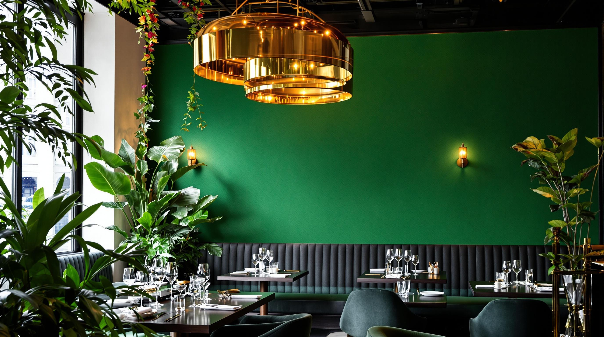

Gastronomía francesa
Platillos inspirados en la tradición culinaria francesa.
Descubre los sabores de la cocina francesa en un ambiente elegante, acogedor y especial. Cada plato está pensado para crear momentos inolvidables.

En Restaurante Ratatoulli nos inspira la gastronomía francesa y el placer de compartir una buena comida.
Combinamos recetas tradicionales, ingredientes seleccionados y un ambiente acogedor para que cada visita sea una experiencia especial.
Descubre nuestros platillos →Cada detalle está diseñado para ofrecerte una experiencia agradable.
Platillos inspirados en la tradición culinaria francesa.
Explora nuestras mesas y selecciona la opción ideal para tu visita.
Un espacio elegante para compartir momentos con familia y amigos.
Explora nuestras mesas y comienza tu solicitud de reservación.
Ver mesas disponibles